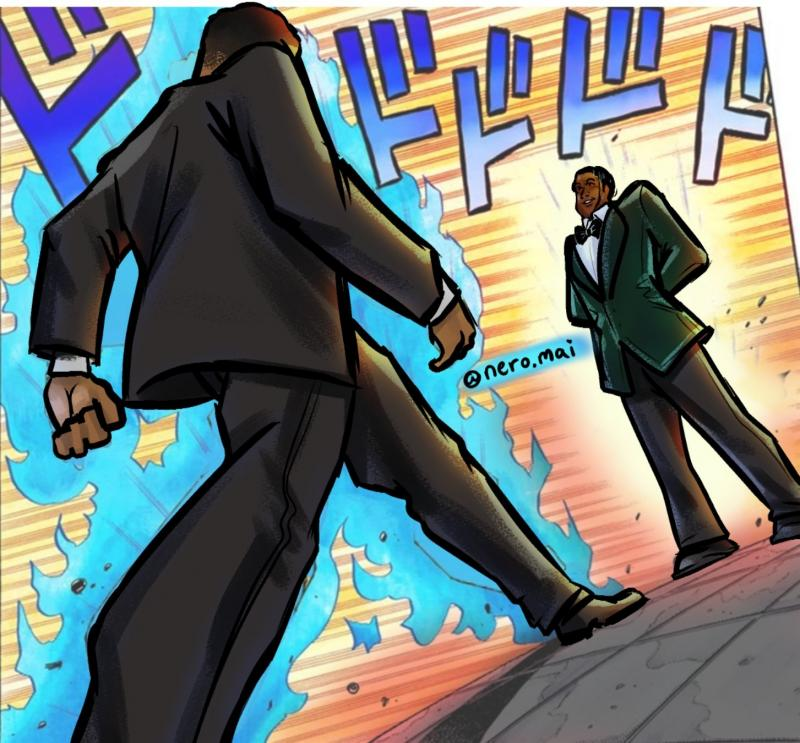

Anime News
Cultura Otaku
Evangelion: Encuentran una ilustración de Asuka entre los escombros en Ucrania
Una serie de fotografías de la 6A Lobanovsky Avenue en Kiev, Ucrania, se volvieron virales en foros de comentarios en Japón. Como escribió el Servicio Estatal de Emergencias de Ucrania en Telegram, un misil impactó en un bloque de apartamentos de varias plantas (17-18 pisos). En su momento no se informó sobre víctimas y la evacuación estaba en marcha.

The Quintessential Quintuplets se luce en un nuevo tráiler de su película
La web oficial de la película Eiga Gotoubun no Hanayome, o The Quintessential Quintuplets the Movie, ha revelado un nuevo tráiler de esta esperada secuela de la serie The Quitenssential Quintuplets, la cual se estrenará el 20 de mayo en cines japoneses. En el vídeo podemos escuchar el que será el tema musical principal de la película, "Go-toubun no Kiseki".

El golpe de Will Smith en los Óscar recordó un meme de JoJo’s Bizarre Adventure
En la noche de la nonagésima cuarta entrega anual de los Premios Óscar ocurrió un inédito evento: el actor Will Smith golpeó/abofeteó al actor y comediante Chris Rock después de que este último hiciera una broma de mal gusto sobre la alopecia de la esposa de Smith, Jada Pinkett Smith, insinuando que podría protagonizar la secuela de la película GI Jane (Hasta el Límite), en donde la protagonista, la teniente Jordan O’Neil, se rapa la cabeza como parte de su entrenamiento militar.

Karakai Jouzu no Takagi-san revela un avance para su próxima película
En el sitio oficial para la adaptación al anime del manga de Souichirou Yamamoto, Karakai Jouzu no Takagi-san (Teasing Master Takagi-san), se publicó un nuevo video promocional para la próxima adaptación cinematográfica de la franquicia. El comunicado de prensa mantiene la fecha de estreno programada para el próximo 10 de junio en cines de Japón